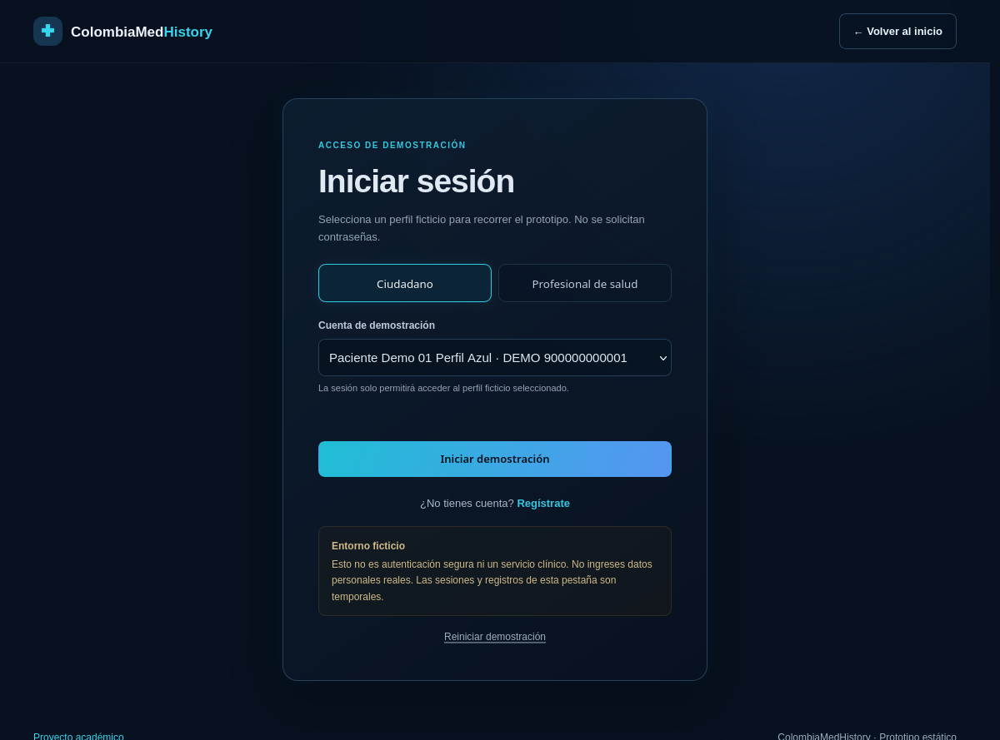
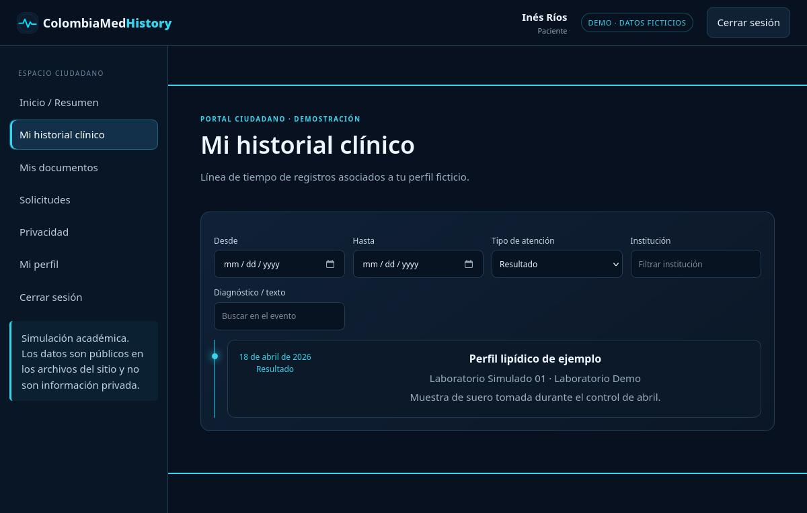
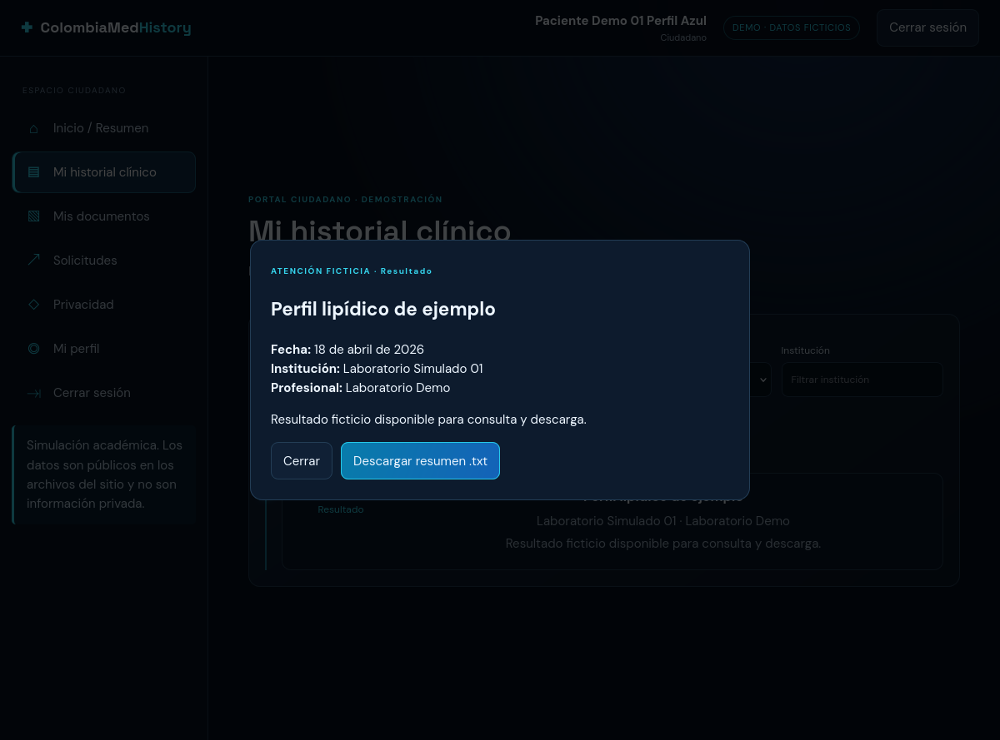

1. Elige la cuenta
Inicio → Iniciar sesión → Ciudadano → Paciente Demo 01 Perfil Azul → Iniciar demostración.
TICs y Competencias Digitales · Pascual Bravo
Para pacientes que buscan un resultado anterior entre papeles, archivos y portales. Encuéntralo por tipo de atención y comprueba su fecha y laboratorio.
Prototipo académico con perfiles ficticios. No ingreses información médica real.
01 / Demostración
En nuestro entorno hemos tenido que buscar una radiografía o un examen mientras alguien espera en consulta. Imagina poder acceder a todos tus resultados médicos en una misma plataforma. Pulsa una captura para ampliarla.

Inicio → Iniciar sesión → Ciudadano → Paciente Demo 01 Perfil Azul → Iniciar demostración.

En el panel, pulsa «Ver mi historial». En «Tipo de atención», elige «Resultado».

Abre «Perfil lipídico de ejemplo». Verifica la fecha y el laboratorio en la ficha.
02 / Entrega académica
Ensayo academico donde sentamos las bases de nuestro proyecto.
Descargar ensayo · PDFDiapositivas preparadas para presentación en clase.
03 / equipo